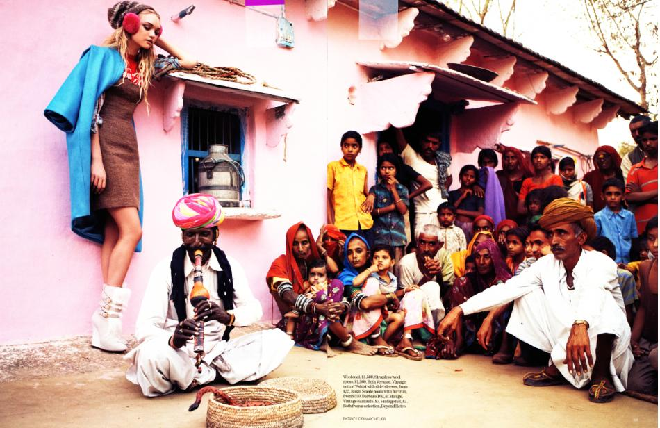

¿Qué es apropiación cultural?
La apropiación cultural es la adopción o uso de elementos culturales por parte de miembros de otra cultura. También se conoce como apropiación cultural indebida, a menudo es retratada como dañina y se la considerada una violación del derecho de propiedad intelectual contra la cultura de origen. También es inevitable cuando múltiples culturas se juntan, la apropiación cultural puede incluir usar tradiciones, comida, símbolos, tecnología, lengua y canciones culturales de otras culturas.

De acuerdo con las críticas hacia esta práctica, la apropiación indebida es diferente a la aculturación, a la asimilación o al intercambio cultural, ya que la apropiación, sea o no indebida, se refiere a la adopción de elementos culturales de manera colonial: Elementos culturales de una cultura minoritaria son copiados por una cultura dominante, entonces estas características son utilizadas fuera del propio contexto cultural, a veces usadas a pesar de los deseos de conservación por parte de la cultura de origen.